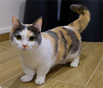
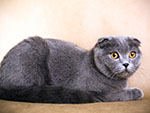
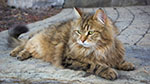
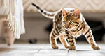

Maine Coon - one of the largest, if not the largest domestic cat breeds.
Munchkin - one of the smallest domestic cat breeds.
Scottish Fold - known for its "folded" ears.
Siberian - hardy and thick-coated.
Tabby - the most common domestic breed.